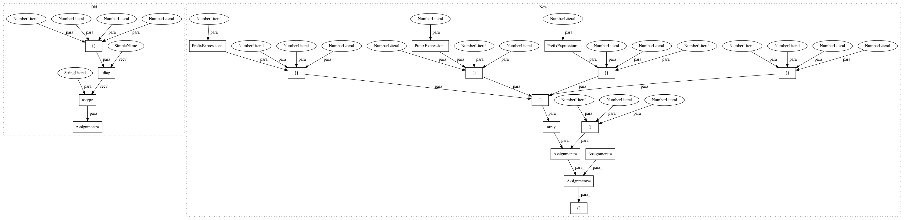

a68785867796cea6990ca7180a2fae269ce6f4ed,dipy/viz/tests/test_apps.py,,test_horizon_events,#,19
Before Change
@npt.dec.skipif(skip_it or not has_fury)
def test_horizon_events():
affine = np.diag([2., 1, 1, 1]).astype("f8")
data = 255 * np.random.rand(150, 150, 150)
images = [(data, affine)]
// images = None
from dipy.segment.tests.test_bundles import setup_module
After Change
@npt.dec.skipif(skip_it or not has_fury)
def test_horizon_events():
// using here MNI template affine
affine = np.array([[1., 0., 0., -98.],
[0., 1., 0., -134.],
[0., 0., 1., -72.],
[0., 0., 0., 1.]])
data = 255 * np.random.rand(197, 233, 189)
vox_size = (1., 1., 1.)
images = [(data, affine)]
// images = None
from dipy.segment.tests.test_bundles import setup_module
setup_module()
from dipy.segment.tests.test_bundles import f1
streamlines = f1.copy()
streamlines._data += np.array([-98., -134., -72.])
header = create_nifti_header(affine, data.shape, vox_size)
sft = StatefulTractogram(streamlines, header, Space.RASMM)
tractograms = [sft]
enable = [4]
if 1 in enable: // just close the window
In pattern: SUPERPATTERN
Frequency: 3
Non-data size: 18
Instances
Project Name: nipy/dipy
Commit Name: a68785867796cea6990ca7180a2fae269ce6f4ed
Time: 2019-11-27
Author: garyfallidis@gmail.com
File Name: dipy/viz/tests/test_apps.py
Class Name:
Method Name: test_horizon_events
Project Name: nipy/dipy
Commit Name: edd701dee2234b6f69d3b994cabf978672e95841
Time: 2019-11-27
Author: garyfallidis@gmail.com
File Name: dipy/viz/tests/test_apps.py
Class Name:
Method Name: test_horizon
Project Name: nipy/dipy
Commit Name: d5be66f320d8e09165ad1f9b44ca5ab2c9586ad2
Time: 2019-11-30
Author: garyfallidis@gmail.com
File Name: dipy/workflows/tests/test_viz.py
Class Name:
Method Name: test_horizon_flow